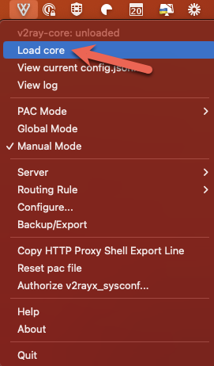
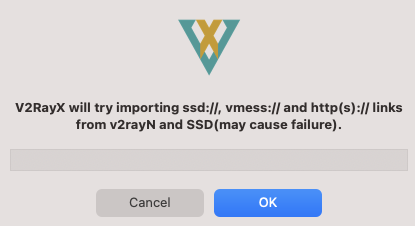
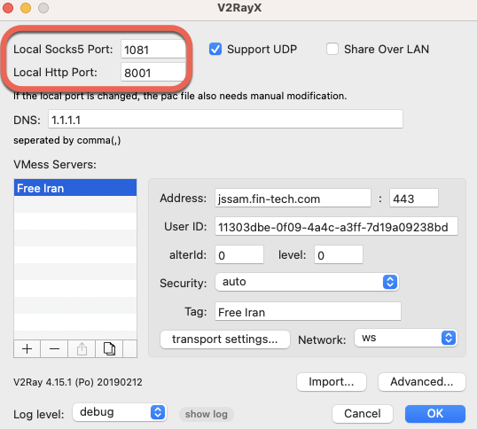

macOS#
Prerequisite (Homebrew)#
-
If you do not already have Homebrew installed on your macOS machine, do so first via typing the below in Terminal:
/bin/bash -c "$(curl -fsSL https://raw.githubusercontent.com/Homebrew/install/HEAD/install.sh)"
Installation#
-
Install V2RayX for macOS by typing the below in Terminal:
brew install v2rayx -
Run V2rayX
Configuration#
-
In the system Toolbar, click on V2rayX and select Load core

Note: If this step is not completed each time V2RayX is restarted, the proxy connections will not succeed.
-
Again from the system Toolbar, click on V2RayX and select Configure...

-
Select Support UDP and enter any desired DNS servers, comma delimited.

Note: 1.1.1.1 is the IP address of CloudFlare's free & redundant primary public DNS server.
-
Click Import and select Import from other links...

-
Copy the below URI to clipboard and paste the link:
vmess://ew0KICAidiI6ICIyIiwNCiAgInBzIjogIkZyZWUgSXJhbiIsDQogICJhZGQiOiAianNzYW0uZmluLXRlY2guY29tIiwNCiAgInBvcnQiOiAiNDQzIiwNCiAgImlkIjogIjExMzAzZGJlLTBmMDktNGE0Yy1hM2ZmLTdkMTlhMDkyMzhiZCIsDQogICJhaWQiOiAiMCIsDQogICJzY3kiOiAiYXV0byIsDQogICJuZXQiOiAid3MiLA0KICAidHlwZSI6ICJub25lIiwNCiAgImhvc3QiOiAianNzYW0uZmluLXRlY2guY29tIiwNCiAgInBhdGgiOiAiL2NvbnRyb2wiLA0KICAidGxzIjogInRscyIsDQogICJzbmkiOiAianNzYW0uZmluLXRlY2guY29tIiwNCiAgImFscG4iOiAiIg0KfQ== - Click OK and then OK again to save the profile
Global System Proxy#
To enable the proxy system-wide, click on the V2RayX application in the System Toolbar, and select Global Mode:

Note: To disable the Windows-wide proxy, use the same steps but select Manual Mode, or quit the application.
Per-Application Proxy#
Instead of system-wide use, to enable use of the proxy on a per-application basis (e.g., for a specific web browser), use Manual Mode and in each desired application, manually configure the local machine proxy that V2RayX creates using server 127.0.0.1 and the SOCKS5 or HTTP port shown in V2RayX configuration.
Examples shown below use port 1081 for SOCKS5 and port 8001 for HTTP proxy:
.
e.g., To configure only the Firefox browser to send traffic via the proxy, apply the relevant settings in the browser Settings -> Proxy Settings:

Disconnection#
To disconnect from the service, either quit the application, or select Manual Mode and remove per-application proxy configuration if required (such as Firefox in the previous example).